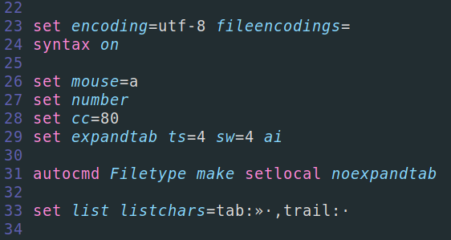

Vim is a very easy to customize. You only need to create a .vimrc file in your root.
Plugins
There are many Plugin manager for Vim. The one that I use is called Vundle.
Once you called it it is easy to import Plugins from github repos. You then need to go in the normal mode, and enter :PluginInstall to go throught the Vundle installer.
Colorscheme
By importing a colorscheme via Vundle and github, it is super easy to change the colours of your Vim, but remember: you can also make your own colours! Just put the line "colorscheme: name" at the end of your .vimrc and you're done!
The graphics in the default Vim editor are quite smooth compared to those of other text editors. To remedy this, here are some commands you can put in your .vimrc.

Terminal
Vim is printed onto your terminal. So if you set the background of your vim and of your terminal transparent, you will have some cool effects and you will see your background. Here is how you put your Vim in transparent. For your terminal, it depends on wich one you use.